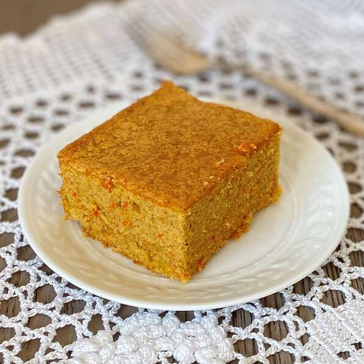

Bolo de Cenoura (Carrot cake)

Description
A traditional favorite in my family, Brazilian carrot cake is very different from the American version.
The
popular cake is topped with homemade chocolate frosting, and perfect to serve with a glass of milk or tea.
Ingredients
- 3 large carrots, peeled and thinly sliced
- 4 eggs
- 1 cup cooking oil
- 2 cups white sugar
- 2 cups all-purpose flour
- 1 tablespoon baking powder
- 2 tablespoons butter or margarine
- 1 cup white sugar
- 1 cup instant hot chocolate mix
- ¾ cup milk